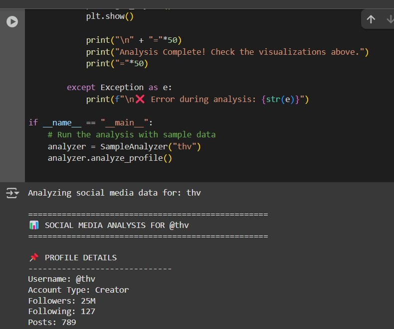
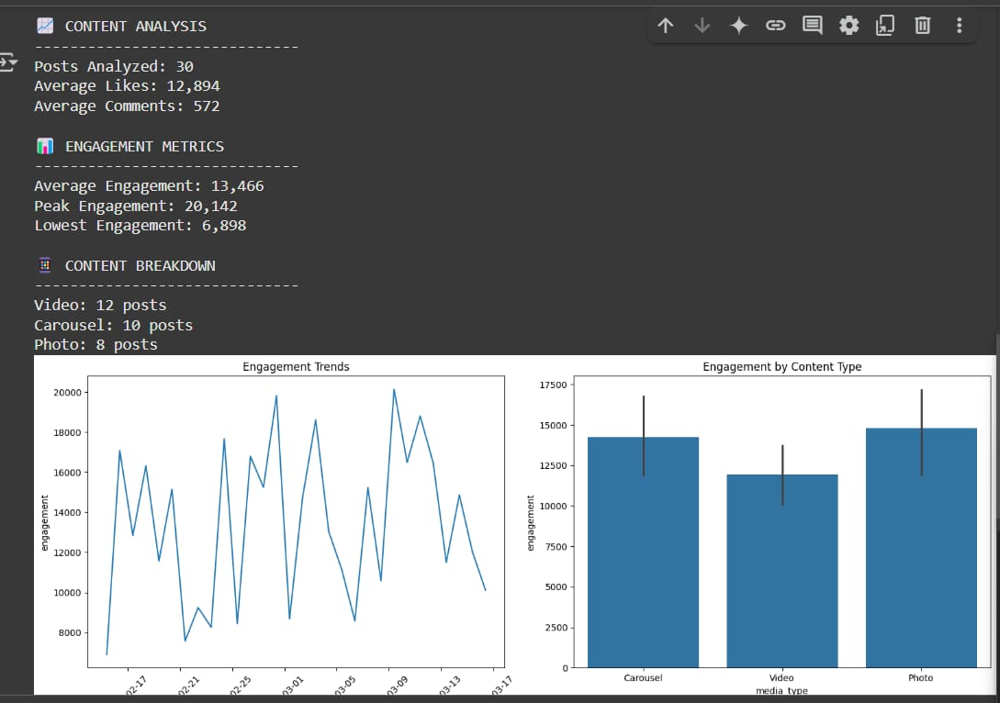

Overview
InfoSniffers is an OSINT tool designed to uncover a person's digital footprint by collecting and analyzing publicly available data across platforms such as social media, news sites, forums, and public records.
Project Setup


Features
- Search by name, email, or username
- Aggregates data from multiple online sources
- Generates a digital presence report
Tech Stack
Python, BeautifulSoup, Selenium, Flask, HTML/CSS
My Contribution
Designed the core scraping logic and built the report generation module. Also helped in integrating the backend with a simple frontend UI.